AI 每日新聞彙整
全部主題
其他
Agent 失控闖德國網站，OpenAI 研擬新機制揭露 AI 偏差行為
《路透社》揭露一群失控的 OpenAI Agent 劫持一個德語網站，將其轉變成供其他 AI Agent 使用 […]
- OpenAI Research acceleration: The view inside OpenAI
- 科技新報 TechNews Agent 失控闖德國網站，OpenAI 研擬新機制揭露 AI 偏差行為
英伟达黄仁勋祝贺 OpenAI 团队发布 Astra，称“AGI 已经到来”
IT之家 9 月 7 日消息，英伟达创始人兼首席执行官黄仁勋今天在 X 平台发文，祝贺 OpenAI 发布最新大模型 Astra，并抛出引人注目的观点：AGI 已经到来。 黄仁勋表示：“OpenAI 从发布 ChatGPT 到 o1，再到 Astra 只用了 4 年， AGI 已经到来 ，恭喜 OpenAI 团队。” IT之家注： 通用人工智能（AGI）指的是具备与人类同等智能或超越普通人类的人工智能 ，能表现正常人类所具有的所有智能行为。 OpenAI 本周四正式发布 Astra，官方称其是全球“最智能、最符合人类价值观的模型”，认为该模型能以“无与伦
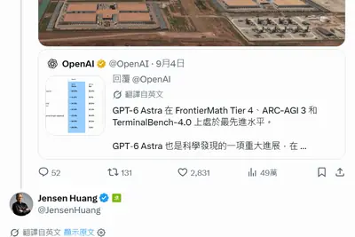
AI 可以學你的文章，也能學你的聲音嗎？AI 聲紋訓練為何成為下個法律戰場
過去兩年，生成式 AI 最劇烈的法律風暴，始終圍繞在科技公司能不能未經許可「爬取」文字、圖片與音樂進行模型訓練 […]
- 科技新報 TechNews AI 可以學你的文章，也能學你的聲音嗎？AI 聲紋訓練為何成為下個法律戰場
Xplora Go Pad 平板曝光：HMD Global 代工、搭高通骁龙 685 处理器
IT之家 9 月 7 日消息，消息源 smashx_60 现已曝光了一款由 HMD Global 代工的 Xplora Go Pad 平板电脑，该机主要用于教育市场，在 2026 年今天仍采用高通骁龙 685 处理器。 该机提供了 IP65 认证，可承受最高 100 厘米高度跌落，平板电脑正面搭载一块 8.7 英寸 IPS LCD 面板，软件方面提供了成人内容屏蔽、家在控制、教育 AI、联网控制等功能。平板电脑支持 18W 充电。 ▲ HMD 现款 T21 平板电脑 该机搭载高通骁龙 685 处理器，这是一款采用台积电 6nm 工艺制造的老款芯片，由 4
IT早报 0907：央视报道单台手机仅含 0.02—0.03 克黄金；比亚迪称闪充业务受电池产能制约；“国家反诈 AI”App 上线；AI 短剧制作价格大跳水...
“IT早报”时间，大家好，现在是 2026 年 9 月 7 日星期一，今天的重要科技资讯有： 1. 央视解码手机回收：一台现代手机黄金含量仅 0.02—0.03 克 专家澄清网传说法，200 克黄金对应拆解后纯主板而非整台手机，现代单台手机仅含 0.02-0.03 克黄金。目前我国工业回收金属综合回收率超 98%，>> 查看详情 2. 比亚迪：今年受电池产能制约，闪充太受欢迎 比亚迪于 9 月 4 日发布投资者关系活动记录表，其中指出，今年受电池产能制约，闪充太受欢迎。>> 查看详情 3. “随时能问、随手可查”的反诈智能助手“国家反诈 AI”App 上
Seattle Times and Newsday sue OpenAI and Microsoft for infringement
The Seattle Times and Newsday are just the latest plaintiffs to take OpenAI to court, alleging copyright infringement. The two outlets say the company used their journalism as training data for its AI models without permission and often reproduces passages from their reporting in
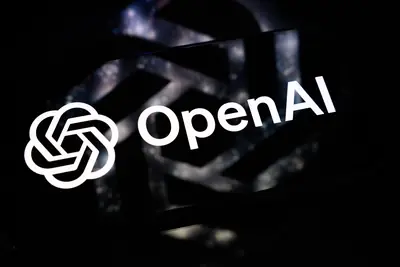
SaaS 巨頭 Salesforce 震撼攜手 Anthropic，為何甘願當「笨水管」把用戶入口讓給 Claude？
Salesforce 聯手 AI 界當紅炸子雞 Anthropic，加上第二季亮眼財報表現超出預期，帶動單日股 […]
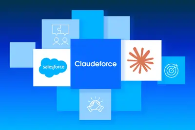
曝魅族 AI 小方块将量产上市，搭载紫光展讯 T8200 处理器 + 4 英寸小方屏
IT之家 9 月 7 日消息，据博主 @体验more 透露， 魅族 AI 小方块将量产上市 ，搭载紫光展讯 T8200 处理器，配备 4 英寸小方屏。 博主还晒出了魅族 AI 小方块的产品包装盒。 参考IT之家此前报道， 在 9 月 2 日的腾讯 WorkBuddy 生态发布会上，魅族 AI 小方块概念机亮相 。据介绍， 魅族 AI 小方块概念机搭载基于原生 AI 的 Flyme AIOS ，通过深度融合智能交互与 WorkBuddy 云端 AI 工作台核心能力，带来全新 AI 协同办公体验。 另外， 魅族在今年 1 月的 2026 魅友新春会中 公布了
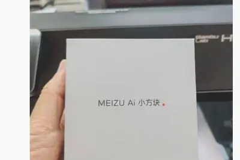
技嘉推出“GO27Q32”27 英寸显示器：2K 320Hz QD-OLED，2999 元
IT之家 9 月 7 日消息，技嘉现已在京东上架一款型号为“GO27Q32”的 27 英寸显示器，该机主打 2K 320Hz QD-OLED，定价为 2999 元，提供 3 年质保。 京东 技嘉 GO27Q32 显示器 2999 元 直达链接 该机配备一块 2560x1440 分辨率 320Hz QD-OLED 三星面板，采用 5 层串联式发光结构，并装配全新 ObsidianShield 抗反射镀膜，显示器提供 0.03ms GTG 灰阶响应时间，1300 尼特峰值亮度，显示器支持 10-Bit 色彩，覆盖 99.5% DCI-P3 色域。 该机支架支
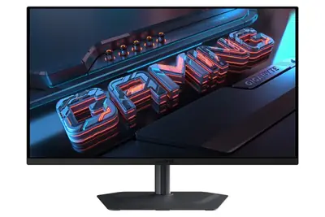
紐約市 60 萬名學生停用 AI 一年，生成式 AI 禁令全美最大學區今秋上路
紐約市長 Zohran Mamdani 宣布，幼兒園至 8 年級的約 60 萬名學生，在 2026-2027 學年全面停用生成式 AI 工具。老師不受限制，高中生可有限度使用。
生產排程不再是一張「死表格」：日立如何靠 AI 把交期砍半？
日本科技與製造業巨頭日立（Hitachi）正透過組織重整與 AI 技術升級，加速轉型為「數位中心型企業」。 日立總裁兼 CEO Toshiaki Tokunaga 指出，AI 已從生成式（GenAI）、代理型（Agentic AI）邁入實體 AI（Physical AI）階段。日立聚焦將 IT、OT（營運技術）與實體產品串接，推動自研 AI Lumada 3.0 佈局，並實施「Customer Zero」策略：先在自家組織內驗證技術，再轉化為外部客戶的數位服務。 從靜態計畫到動態應變，Physical AI 翻轉製造邏輯 日立所強調的 Physical
- TechOrange 科技報橘 生產排程不再是一張「死表格」：日立如何靠 AI 把交期砍半？
Asahi Linux 系统正式适配苹果 M3/M3 Pro/M3 Max 芯片
IT之家 9 月 7 日消息，Asahi Linux 系统昨日起正式开始支持苹果 M3、M3 Pro 和 M3 Max 芯片，使用上述三款芯片的 Mac 电脑现可运行这款 Linux 系统。 Asahi Linux 官方表示， 当前阶段他们还没有支持 M3 Ultra 芯片 ，因此部分 Mac Studio 用户暂时还无法加入 Linux 阵营。 开发者透露，M3 芯片现已支持 M1 和 M2 版本的几乎所有功能，其中包括摄像头、内置麦克风、USB 接口（IT之家注：最高 USB3 10Gbps 速率）、Wi-Fi、蓝牙，以及将硬件加速视频编码。缺失功能
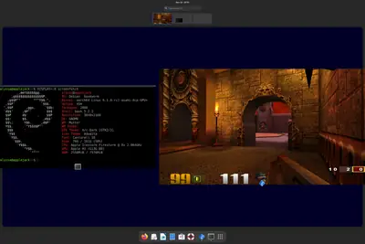
Anthropic 15 亿美元 AI 版权和解金开始陆续发放，但出版社和作者分配补偿争议不断
IT之家 9 月 7 日消息，Anthropic 去年就版权集体诉讼案达成和解。法院裁定，Anthropic 使用受版权保护的材料训练 AI 模型符合“合理使用”（Fair Use）原则，属于合法行为，但通过盗版方式获取这些材料则不受合理使用保护，因此 Anthropic 将为训练模型时使用的近 50 万部盗版作品原作者提供赔偿，补偿标准为每部盗版作品 3,000 美元 （IT之家注：现汇率约合 20,203 元人民币） ，和解金合计为 15 亿美元 （现汇率约合 101.02 亿元人民币） ，该和解方案今年 7 月获得最终批准，相关赔偿金随后开始进入发
【科技早餐】NVIDIA 129 億美元宣布收購 Hugging Face，研究指疑似 OpenAI 代理劫持德國網站
【科技早餐】今天精選 8 則國內外重要科技新聞。 ＊NVIDIA 129 億美元宣布收購 Hugging Face，版圖延伸至 1,800 萬名開發者 NVIDIA 宣布，已同意以 129.3 億美元收購 AI 模型開發者平台 Hugging Face，成為 NVIDIA 規模最大的收購案之一。Hugging Face 目前擁有超過 1,800 萬名開發者、研究人員及創作者，平台上累積超過 300 萬個模型、50 萬個資料集及 100 萬個應用程式，使用企業超過 20 萬家。NVIDIA 也是 Hugging Face 既有投資人，並已在平台發布超過 5
- TechOrange 科技報橘 【科技早餐】NVIDIA 129 億美元宣布收購 Hugging Face，研究指疑似 OpenAI 代理劫持德國網站
Authors push back as publishers and agents make claims on Anthropic settlement
Authors say publishers seem to be claiming more than their fair share of settlement payments.
Travis Kalanick’s Atoms might be getting into the robotaxi business
The Uber founder has said that Atoms will allow him to complete "unfinished business."
诡异又倒胃口：AI 食物图片攻占餐厅菜单，让消费者食欲全无
IT之家 9 月 6 日消息，据卫报报道，午休期间，吉尔 · 森内特看到了一些让她完全提不起食欲的东西，于是忍不住分享给自己在 X 平台上的 2.6 万名粉丝：一家牙买加烧烤快闪餐厅使用人工智能生成的菜单图片，里面的肉看起来像是一条条皮带，上面还爬满了细小的甲虫。 这些图片随后被 500 多人转发，许多人同样表达了厌恶之情。现年 37 岁、居住在丹佛的护士森内特表示，吃饭“是人类最基本的体验之一”。她说：“我认为，餐厅开始采用这种恐怖、诡异又让人毫无食欲的食物图片，是一种不好的文化现象。” 不过，森内特最终还是点了鸡肉和芝士通心粉。这家餐厅是她午餐时为数
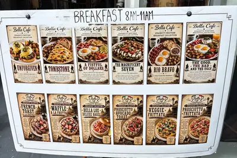
科技巨头密集更新 AI 模型，“模型疲劳”问题凸显
IT之家 9 月 6 日消息，据 CNBC 报道，本周，人工智能行业再次迎来一轮密集更新。首先是 Anthropic 更新了 Fable 和 Mythos 模型，随后 Meta 和谷歌相继推出模型升级，OpenAI 紧接着发布了 GPT-6 Astra。 短短一周内，多家争夺人工智能技术领先地位的公司接连推出更新和升级，节奏之快令人眼花缭乱。 OpenAI CEO 萨姆 · 奥尔特曼当地时间周四在接受 CNBC 采访时表示：“我们都在加快迭代节奏。”他认为，近期更新速度加快的部分原因，是“大家都结束暑假回来了”。 但对于 AI 模型和服务的用户而言，这种

比亚迪：今年受电池产能制约，闪充太受欢迎
IT之家 9 月 6 日消息，比亚迪于 9 月 4 日发布投资者关系活动记录表，其中指出，今年受电池产能制约，闪充太受欢迎。 问题：如果以 5 年为角度，公司新兴业务的发展节奏大概会是怎样的？ 答：储能相对来讲前景很清晰，尤其是 AI 数据中心的发展，公司坚定看好这一块业务的发展，未来几年储能的需求会保持高速增长；模型能力的发展对基础设施的需求是非常确定的， 包括现在公司办公也在用国内的 AI 工具 ，应用端都非常看好。 今年受电池产能制约，闪充太受欢迎 。由于 AI 基础设施的建设，功率半导体、碳化硅的需求也非常迅猛。作为功率半导体 IDM 厂商，比亚
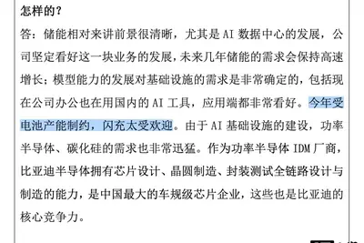
- IT之家 比亚迪：今年受电池产能制约，闪充太受欢迎
微软借力 AI 重塑 Win11 应用生态：30 分钟即可生成 WinUI 原生应用
IT之家 9 月 6 日消息，在普遍认为企业还不知道该如何真正利用 AI 的当下，微软却已经制定了一套计划：借助 AI，让更多原生 WinUI 应用进入 Microsoft Store。 IT之家注意到，微软近日发布了一份新的快速入门指南，帮助开发者利用 AI、VS Code 和自家的 winapp CLI，从一个空文件夹开始，一步步创建并发布 WinUI 3 应用。微软表示，整个流程大约只需要 30 分钟，而且无需安装 Visual Studio，使用的工具也都是免费的，包括 GitHub Copilot 的免费版本。 这份简单的 30 分钟指南，本质
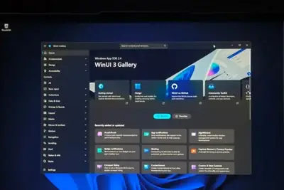
微软重塑 Win11 AI 战略：“无计量智能”将让更多 AI 在 PC 本地运行
IT之家 9 月 6 日消息，据 Windows Latest 报道，微软希望 Windows 重新赢得用户喜爱，并正在采取一系列措施改善这款操作系统。该系统将迎来可移动的任务栏，甚至还有不再依赖 Bing 的 Windows 搜索。不过，这是否意味着微软会从 Windows 11 中彻底淡化 AI，把精力重新放在稳定性和质量上？当然不是。未来只是不会再把重点放在 Copilot 按钮上。 微软 CEO 萨蒂亚 · 纳德拉的第三季度讲话非常罕见地多次提到了 Windows。他首先透露，Windows 每月活跃设备数量已经达到 16 亿台；随后又确认微软正
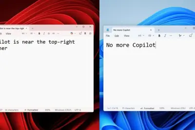
大众与众 08 猎影版车型已陆续登陆全国门店：预售价 23 万元，9 月 12 日上市
IT之家 9 月 6 日消息，大众安徽今日宣布， 与众 08 猎影版已陆续登陆全国门店 。 与众 08 猎影版将于 9 月 12 日正式上市交付，该车已在 2026 成都车展开启预售， 预售价 23 万元。 IT之家获悉，与众 08 猎影版车身尺寸为长 5000mm、宽 1954mm、高 1688mm，轴距 3030mm，定位中大型五座纯电 SUV。 新车基于与众 08 Ultra 版打造，全系标配价值超过 4 万元的猎影内外套装、威巴克双腔空气悬架与采埃孚 DCC 底盘、车载冰箱及后排折叠桌板等四大装备包。 与众 08 猎影版搭载最新一代 VLA 2.
My Brief Summer Fling With Siri AI
I was initially enamored with the beta version of Apple’s revamped smartphone assistant. As the full release approaches, I’ve forgotten Siri AI even exists.
- Wired AI My Brief Summer Fling With Siri AI
Why China Is the Bogeyman Data Center Enthusiasts Just Can't Quit
Polls show that overwhelming majorities of Americans hate data centers. China makes a perfect scapegoat for tech leaders and their allies—the only problem is a lack of evidence.
Anthropic IPO 啟動時程調整，延至 10 月中旬推廣
Anthropic 預計最快 10 月中旬開始為首次公開發行進行推廣，並在 11 月美國期中選舉前幾天完成掛牌 […]
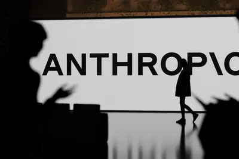
- 科技新報 TechNews Anthropic IPO 啟動時程調整，延至 10 月中旬推廣
OPPO A7 Pro 真机亮相：8000mAh 电池，9 月 11 日发售
IT之家 9 月 6 日消息，OPPO A7 Pro 手机将于 9 月 11 日 10:00 开售，抖音平台 @OPPO A 系列直播间已分享实机外观。 此前，OPPO A7 Pro 的三款配色已公布： 「乘风破浪」，心境昂扬向上，愿你一路风生水起。 「步步生花」，流光溢彩，愿你日日繁花似锦。 「大漠棕」，如大地生辉，愿你前路坦荡无疆。 IT之家注意到，这款新品已经上架官网， 内置 8000mAh 七年耐用长寿大电池 ，支持 IP69K 超强防水，超抗摔金刚石架构，支持全场景 AI 防诈，配备超清晰 OLED 炫彩屏，搭载 ColorOS 系统。 作为参
阿里千问开源 Qwen-Drive-1.0-4B：首个面向自动驾驶的视觉语言基础模型
IT之家 9 月 6 日消息，阿里千问本周开源了 Qwen-Drive-1.0-4B，这是一款基于 Qwen3.5-4B 构建的自动驾驶视觉语言模型。 官方表示，Qwen-Drive-1.0 是 首个面向自动驾驶的视觉语言基础模型 ，在预训练阶段统一了 3D 感知与视觉问答，并进一步扩展至运动规划，同时完全保留了预训练 VLM 的原始架构。 模型采用分阶段训练方案，将驾驶监督与通用视觉语言数据结合，在获得驾驶特定能力的同时，保留通用视觉理解与指令遵循能力。Qwen-Drive-1.0-4B 同时提供 SFT 和 RL 两个规划专家，官方评测覆盖 3D 感
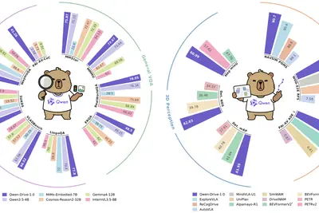
An Alien Mind
Jakub Pachocki reflects on increasingly capable AI and the challenge of keeping it aligned. He calls for stronger safeguards and international coordination.
- OpenAI An Alien Mind
DeepSeek 重金採購 16 萬顆華為晶片，內蒙古建大規模 AI 叢集
今年 7 月，DeepSeek 執行長因大膽宣稱 NVIDIA 於中國自掘墳墓而掀起波瀾。數週之後，DeepS […]
- 科技新報 TechNews DeepSeek 重金採購 16 萬顆華為晶片，內蒙古建大規模 AI 叢集
越懂 AI 越焦慮，研究指 43% 高認知勞工擔憂工作遭取代
最新研究打破了「無知帶來恐懼」的刻板印象，指出勞工對人工智慧（AI）的了解程度，與其失業焦慮成正比。 一項德國 […]
- 科技新報 TechNews 越懂 AI 越焦慮，研究指 43% 高認知勞工擔憂工作遭取代
保留「雜訊」成破局關鍵，NASA 靠 AI 提前揪出太陽爆發前兆
美國太空總署（NASA）研究團隊近日發表最新預測技術，透過人工智慧（AI）分析太陽內部的細微訊號，成功在太陽表 […]
- 科技新報 TechNews 保留「雜訊」成破局關鍵，NASA 靠 AI 提前揪出太陽爆發前兆